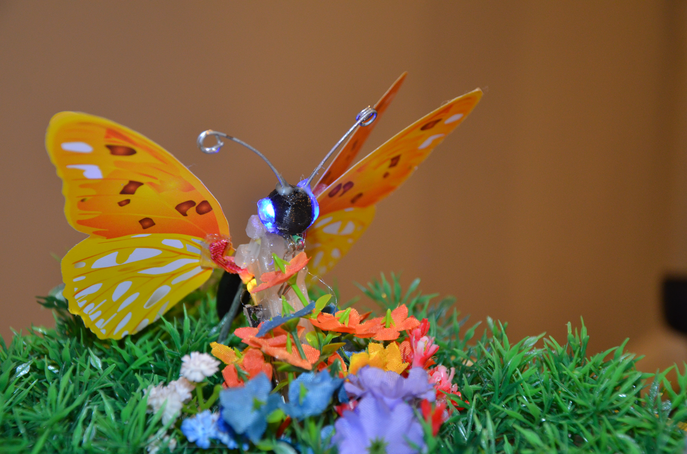

My Experiences
Hi, I'm George, a 13 year old student from London, Ontario who enjoys turning ideas into real projects. I like experimenting with technology, whether that means coding in Python, designing parts in CAD, or building electronics with Raspberry Pis and ESP32s. I enjoy solving problems that require creativity and logic. Many of my projects involve a mix of software, mechanical design, and electronics. I learn by building, testing, failing, and improving.
༻☙--- ✵ ✵ ✵ ---❧༺
My Skills
Programming
Python
MicroPython
HTML & CSS
Basic scripting and automation
Hardware
ESP32 microcontrollers
Raspberry Pi
Soldering and wiring
3D printing
Design
CAD (Fusion 360)
3D printing
Mechanical design
༻☙--- ✵ ✵ ✵ ---❧༺
Featured Project (Built in 2026)


The Mechanical Butterfly is an interactive robotic model inspired by the movements and behaviours of a real butterfly. It uses a servo motor and a gear mechanism to flap its wings, creating lifelike motion. RGB LEDs in its stomach and blue LEDs in its eyes provide colourful lighting effects, while an IR laser sensor detects objects in front of it. A brightness sensor allows the butterfly to recognize when it is dark, causing it to fold its wings to sleep. When idle, it gently fans its wings to wait. As soon as an object/person is seen by the laser sensor, the butterfly flapps its wings rapidly while its lights and illuminated base turn on, creating an engaging and lifelike display.